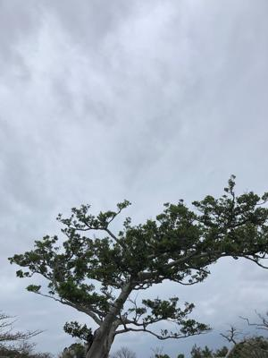
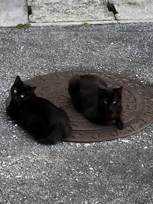

うるがいの話 ある日
最新: 猫っ毛【うるがいの話 ある日】とは 一日だけのプログです
『うるがいの話』の最新一日だけのプログで、通信料が少なく経済的だ。カニの画像をクリックすると全ての日付が載る『うるがいの話』サイトを表示します
|
|
【うるがいの話】 うるがい(ｳﾙｶﾞｲ urugai)とは、『もずくがに』の名前でとても大きくなります。 |
|---|---|
|
|
【カミマヤーの話】 猫のことを方言でマヤーといいます。カミマヤー（kamimayaa）とは、神の猫のことです。 |
|
【たながぁの音楽】 たながぁ（ﾀﾅｶﾞｰtanagaa）とは手長えびのことで、何種類かあり大きいのは車 エビぐらいになります。 |

|
【ぶながぁの話】 ぶながー(bunagaa)とは、赤い髪の毛、赤い身体、そして身長は１ｍ２０ｃｍ ぐらい、川の蟹を食べているの目撃された。場所は沖縄県国頭郡大宜味村のと ある村僕の隣近所に住んでいる爺さんから、聞いた話です。 |
|
|
【ギーマの話】 ギーマ(giima)とは、山原の里山に咲くスズランに似た、 花を付けます。実は食べられます、 気が付くと口の周りが紫になっています。 |
2022年02月17日 (木）猫っ毛
18:16
 
深夜３時ごろ、右目が痛くて目が覚める。目の中にまつ毛があるような痛みで
ある。洗面所で目の中を見る、何も無い。でも痛い、仕方ないので炎症を抑え
る目薬をさす。少し痛みが引いてくる、そのまま眠り朝起きる。痛みは収まっ
ているようだと思ったが、暫くするとまた痛みが戻ってきた。カガミをみるジ
ーとみる、何やら薄い毛みたいなものがある。慎重に取る、５センチメートル
ほどの長さの髪の毛である。痛みがひいた、原因はこれだ。私の髪の毛は薄く
よく、猫っ毛と言われる。薄いので、３時には見つけることが出来なかったか
も。それにしても、この長さの遺物がよく目に入ったもんだ、何時入ったのだ
ろう。先週メガネ屋さんで注文したメガネが、仕上がったので受け取った。多
少違和感があるが、そのうち慣れるだろう。これで手元に、４つのメガネがあ
る。車を運転するときのメガネ、１メートルほど離れてパソコンをみる（ＺＯ
ＯＭ会議や、ギターを弾くとき）、パソコン用（前の）、パソコン用（今回）
１８時１３分 ビットコインの総資産 ￥１４、４５９↓